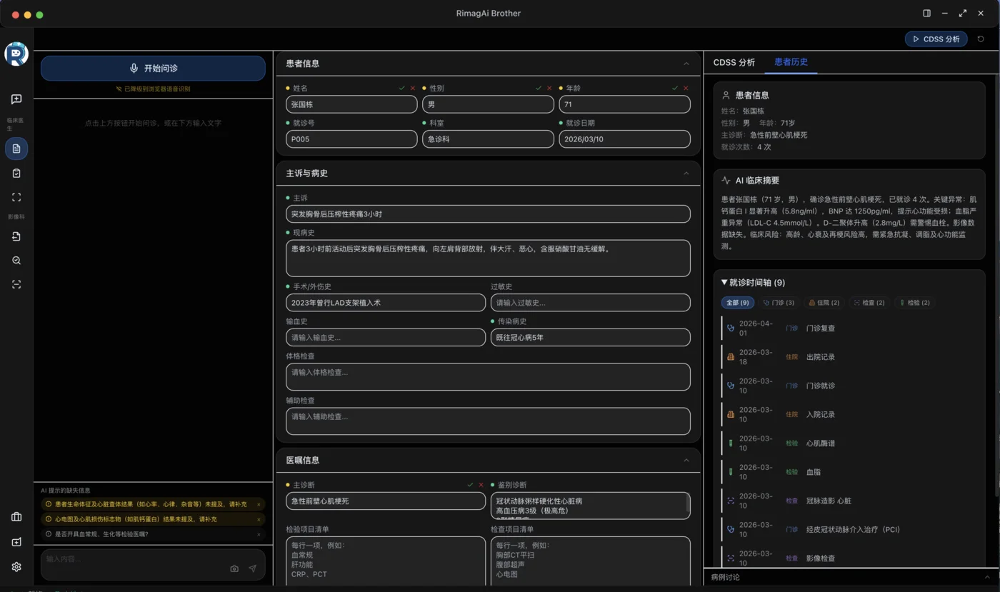
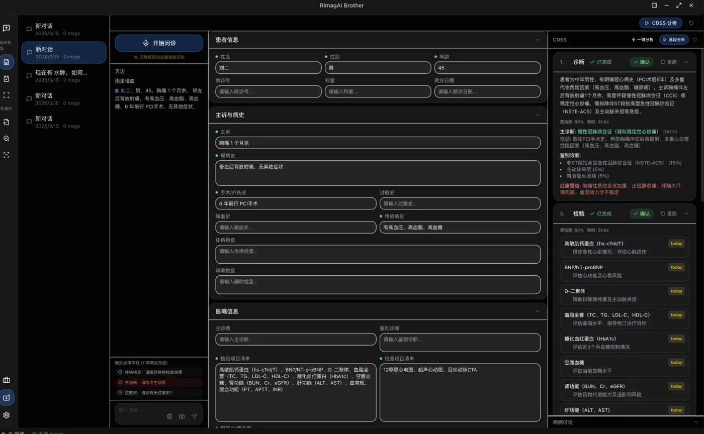
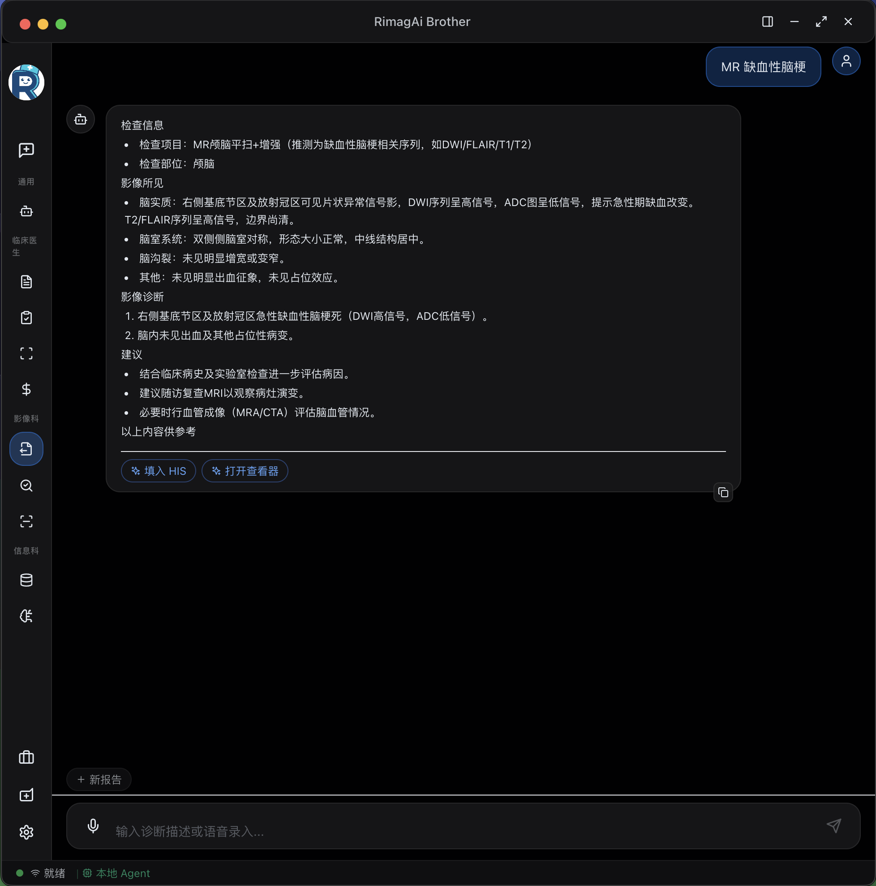
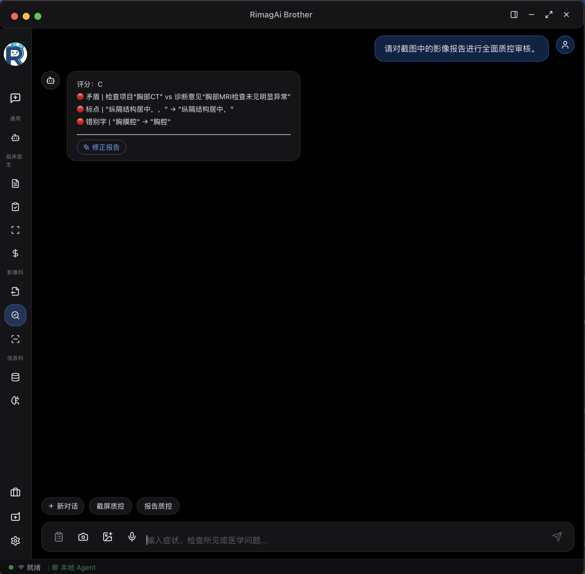
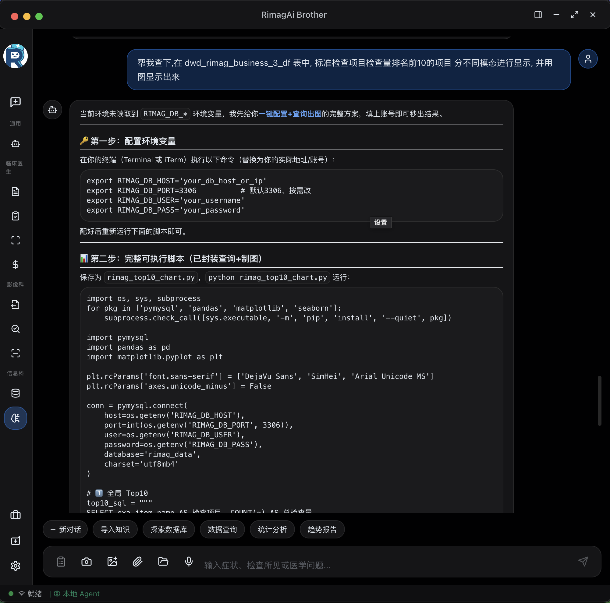
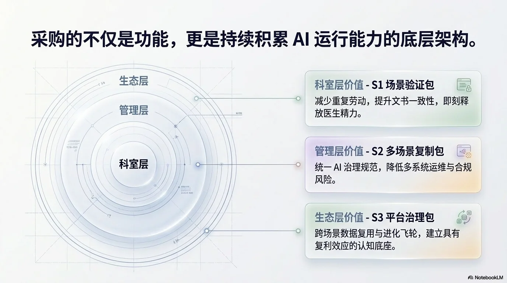

不是卖单点工具，而是帮医院建设系统级 AI 能力。基于 MCOS 六层架构，覆盖临床、影像、信息三大科室，90 天分阶段交付，本地优先部署。
从患者进入诊室到医嘱提交，AI 贯穿每个环节：录入提效、决策辅助、费用合规。不打断工作流，不增加操作步骤。
诊断→检查→用药→处置四阶段独立推理，每步附带置信度评分与文献/指南依据。医生可在任意节点介入修正，规则引擎同步拦截关键禁忌。
L3 认知层语音（FunASR 流式识别）、截屏（OCR + 视觉理解）、文字三通道并行。AI 自动提取结构化 EMR 字段，字段级置信度标记，一键确认写回 HIS。
L1 + L4医嘱提交前实时检查编码正确性、费用合理性和医保政策合规性。本地规则引擎零延迟执行，支持自定义规则集适配各地政策。
L5 治理层

影像科医生的核心痛点是报告编写耗时和质量一致性。MCOS 从生成到质控形成闭环，同时通过 ACRAC 减少不必要检查。
语音控制 + DICOM 影像集成 + 结构化模板引擎。支持 CT/MR/DR/US 多模态，自动关联患者历史影像对比，报告编写时间缩短 60%+。
L1 + L4第一层：规则引擎实时拦截低级错误（漏项、左右标记、格式）。第二层：大模型语义质控（逻辑一致性、遗漏发现、术语规范）。
L3 + L5基于 ACR 适宜性准则 + 国内专科共识，覆盖 200+ 临床场景。医嘱提交前评估检查适宜性（1-9 分），低适宜性检查给出替代建议。
L3 认知层

信息科不再是"跑报表"的部门。数据智能体让业务人员自助查询，病历质控自动化运行，知识库持续积累组织级资产。
自然语言查询院内数据库，AI 自动生成安全 SQL。权限矩阵细粒度到表/字段级别，审计日志完整记录每次查询。MCP 工具链支持复杂分析任务自动拆解。
L2 + L5后台自动轮询批量扫描在院和归档病历。多维度检查：完整性 + 逻辑一致性 + 时效性 + 规范性。问题项按严重程度分级推送至质管科，支持整改闭环追踪。
L3 认知层将科室诊疗规范、操作流程、用药习惯等隐性知识结构化存储。捕获医生对 AI 推荐的采纳/修正行为，自动萃取经验规则，持续迭代本地知识库。
L6 进化层
分阶段交付，每阶段可独立验收，降低实施风险
完成 HIS/EMR/PACS 数据对接，部署 MCOS 核心运行层，选择 1 个高价值场景（如影像报告生成）完成端到端验证。
扩展至 3-4 个场景，上线治理层（审计日志、权限矩阵、规则引擎），完成安全评估和合规审查。
8 个核心场景全部上线，启动知识沉淀和反馈学习机制，建立持续优化的运营体系。

本地优先，灵活适配不同医院的基础设施条件
全部组件部署在院内服务器，数据不出院墙。支持国产算力和国产大模型。Docker Compose 一键编排。
敏感数据和核心推理本地运行，非敏感能力（知识检索、模型更新）可选云端。灵活平衡成本与安全。
通过标准接口对接现有 HIS/EMR/PACS/RIS/LIS，不改动原有系统架构，提供平滑的工作流改造路径。